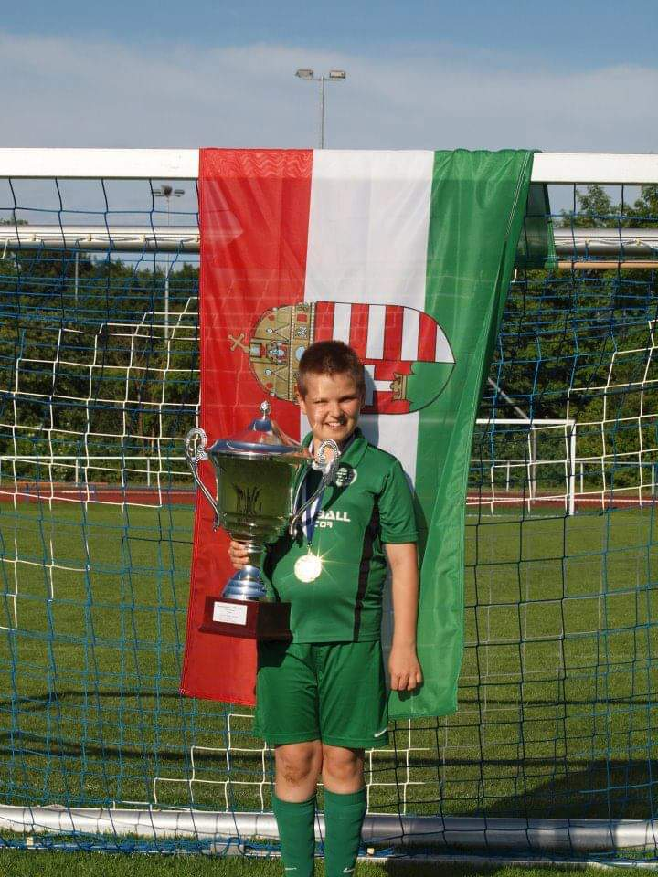
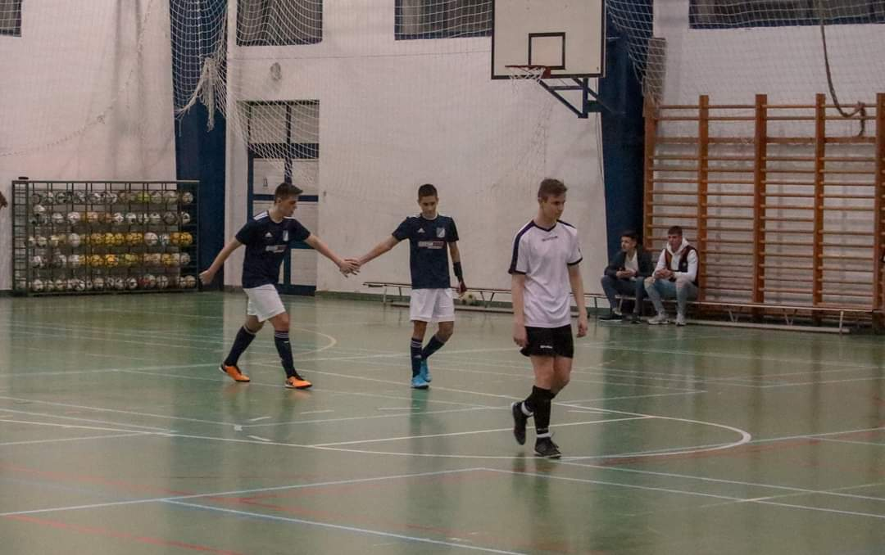

Tanulmányaim

Iskolai tanulmányaimat az Újpesti Homoktövis Általános Iskolában kezdtem meg. Ezalatt a 8 év alatt több évben is sikerült kitűnő bizonyítványt produkálnom. Ebben az időszakban kezdett el az érdeklődési köröm is formálódni és ekkor derült ki, hogy igen erősen reál beállítottságú vagyok. Több matematika és fizika versenyen is képviseltem az iskolát. Ének tagozatos voltam és ennek köszönhetően pár énekversenyen is megfordultam, amelyek közül a negyedikes kerületi csapatversenyre vagyok a legbüszkébb, hiszen megnyertük. Mivel már abban az időben is versenyszerűen sportoltam, több sporteseményen is az iskola színeiben versenyeztem. A középiskolai tanulmányaimat az Újpesti Könyves Kálmán Gimnáziumban kezdtem meg. Itt már sok munkát öltem bele a tanulásba, főleg a reál tantárgyakba és szép teljesítménnyel sikerült ezt a 4 évet teljesítenem. Matematika és fizika versenyeken ezt az iskolát is többször képviselhettem, illetve 1-2 sporteseményen is. A sok munka és a jó jegyek kifizetődtek hiszen egy kiváló érettségivel felvételt nyertem az első helyen megjelölt Budapesti Műszaki és Gazdaságtudományi Egyetemre. Jelenleg itt folytatom tanulmányaimat.
Kompetenciáim
Nyelvismeret:
- B2 komplex általános nyelvvizsga angol nyelvből (2019)
- olasz nyelvből alapszintű nyelvtudás
Számítógépes ismeretek:
- Microsoft Office Word, -Excel, -PowerPoint középszintű ismerete
- SolidWorks alapszintű ismerete
- C# programozási nyelv alapszintű ismerete
Erősségeim:
- Matematika emeltszintű ismerete
- Fizika emeltszintű ismerete
- Kémia középszintű ismerete
Szakmai készségek:
- Pontos és precíz munkavégzés
- Vélemények és kritikák elfogadása
- Csapatban is jó munkaerő
- Mindig időre elvégzett feladat
- Nyitott a fejlődésre
Szabadidős tevékenység
14 éve jelen van a labdarúgás az életemben. 5 évesen kezdtem el egy egyesülethez edzésekre járni és ez azóta is megmaradt. Sajnos az egyetem mellett kevesebb időt tudok rá szánni, de így is heti 1-2 edzés beleszokott férni az időmbe. A foci mellett hobbim még az Xbox és a futás is.
 